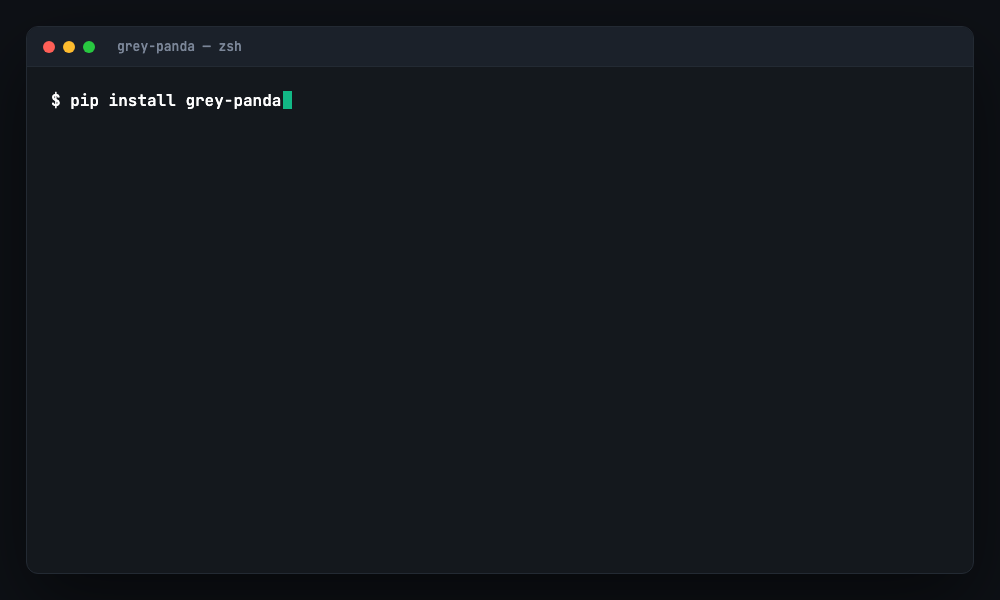

A standards-anchored AI security toolkit any developer or reviewer can run in seconds — in the IDE, in CI, or from the terminal. You never rewrite your LLM call. You wrap it.
Deterministic by design — no LLM in the loop. Same code, same verdict, every run; fully offline, private, and free. Your gate never flakes and your source never leaves your machine.

Traditional AppSec never covered prompts, tools, agents, or MCP. These are the risks your existing scanners don't see.
The top AI attack pattern — and it needs no authentication. Any user input can hijack the model.
One injected instruction can make an agent send money, delete data, or call a tool with your credentials.
A tool's description hides instructions, or a trusted tool is silently swapped after you approved it — a "rug pull".
Each audience gets a clear front door — all powered by one shared, tested engine. No duplication, no drift.
Drop-in SDK guardrails + IDE integration. Protect an LLM call in under 2 minutes.
→AppSec gate: AISVS verify, threat models, injection battery, sign-off.
→27 rules → OWASP IDs. Markdown / JSON / SARIF. GitHub Action + pre-commit.
→Rule of Two, HITL, kill switch, MCP manifest pinning, ACS Guardian.
→The knowledge pack, mappings, and the honest Can/Cannot-Do doc.
One CLI drives them all —
scan · verify · mcp · init
Defense in depth: known patterns blocked at input, data quarantined even if injection succeeds, output cleaned, every action audited.
Add AgentSecurityWrapper — the Rule of Two enforced at construction, deny-by-default tools, HITL gates, per-session budgets, and a kill switch. See the architecture →
Grey Panda secures MCP — and ships as an MCP server, so Claude Code, Cursor, Windsurf, or VS Code can call it right in your editor. The model does the reasoning; Grey Panda hands back deterministic, OWASP-cited findings. One command for Claude Code:
scan · review-snippet · verify · explain-risk · list-standards · checklist
“review this file with grey panda” · “are we AISVS Level 2 ready?” · “explain LLM01:2026”
Every rule, checklist item, and SDK control cites a specific ID. Also grounded in NIST AI 100-2 and Meta's "Rule of Two".
Grey Panda scans its own repository clean in CI. It practices exactly what it preaches.
One tool, three profiles — from a solo indie dev to a regulated enterprise. Nobody is priced out of safety.
Grey Panda is a strong floor, not a ceiling. Pattern matching can't stop all prompt injection; regex DLP is language-specific; static analysis has false positives and negatives. We ship a whole document — with a confidence level and failure condition for every capability. Read what it can & cannot do →